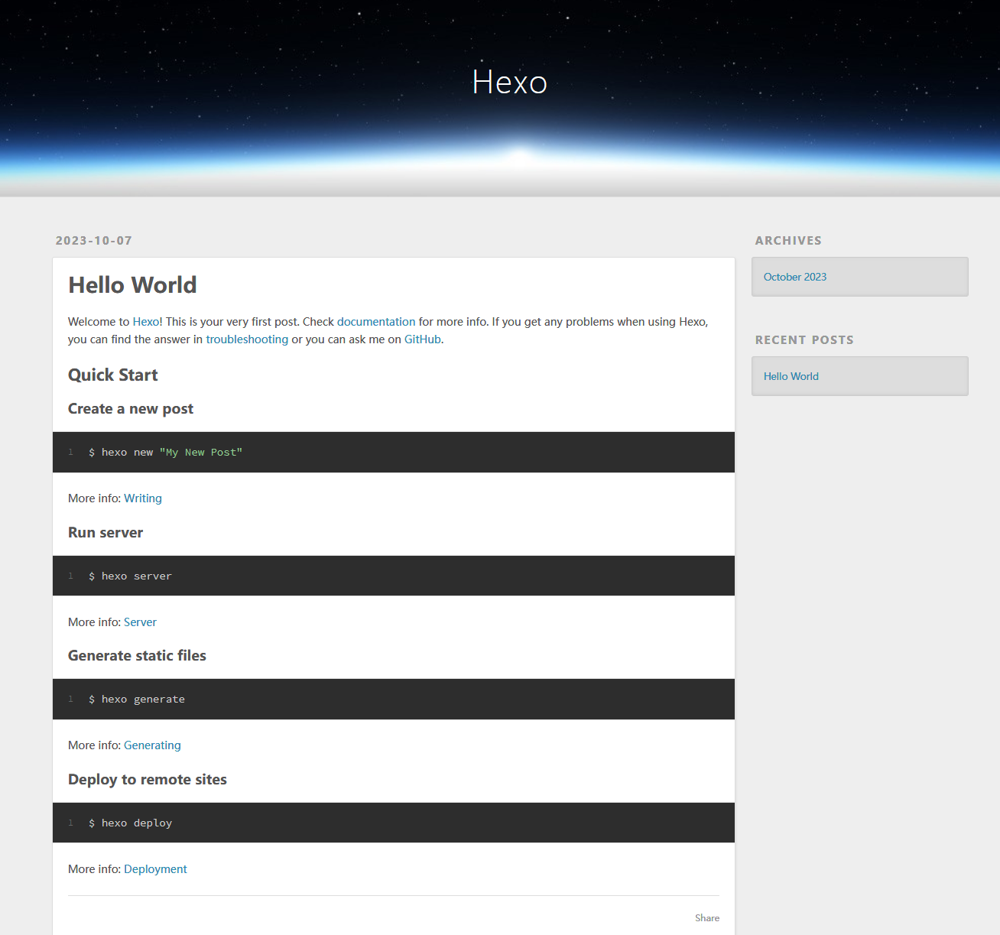

Other
Hyjack 的博客搭建
虽说是计算机网络内培要求的作业，但是已经想做一个博客很久了，来从0到1认真做一个属于自己的网站吧。:D
主要使用的是 hexo 博客框架，在阿里云上买了云服务器，不过在没有备案之前只能用 Github Pages 托管网页。
云服务器
选择
- 阿里
- 轻量应用服务器：2核2G配置，108元/1年；
- 轻量应用服务器：2核4G配置：297.98元/1年；
- 通用算力型云服务器：2核2G配置：731.52元/1年；
- 腾讯
- 轻量应用服务器：2核2G，112元/1年、540元/3年；
- 轻量应用服务器：2核4G，218元/1年、756元/3年；
- 轻量应用服务器：4核8G10M，388元/1年；
- 标准型云服务器：2核2G，280.8元/1年；
- 华为
- HECS云服务器：1核2G，23.13元3个月、64.56元/1年；
- HECS云服务器：2核4G，103.09元/1年；
- 通用型云服务器：2核4G，669.76元/1年；
先试试水用阿里云3个月的免费试用。实际是 200/月 抵扣额度，也不能买太贵的，能用的就是 1vCPU 2GiB 100Mbps。
系统
先进行一些安全性操作：
-
创建新账号 hyj 供后续使用
-
配置好 root 和 hyj 的密钥登录后，在
/etc/ssh/sshd_config中-
关闭
PasswordAuthentication密码登录，只允许密钥登录 -
更改 ssh 端口
Port，新端口记录在本地的 ssh config 中1 2Port 22 Port X重启 sshd 服务
systemctl restart sshd
-
域名与备案
- 阿里云买了十年的 hyjack.cc，-￥700
- 要求域名注册后也需要实名，否则域名处于 Serverhold 状态（暂停解析）
- 可设置域名解析的 IP
- 可选择云解析系统分配的 DNS 服务器
- 备案
- 提供 IP - 域名
- 命名与介绍不能使用：个人空间、爱好者、博客、导航、工作室、论坛、平台、热线、社区、社团、网络、网站、网址、主页、资讯、作品展示等词汇 doge
- 个人笔记
- 服务器需要是包年包月的包月3个月及以上付费模式，才能进行备案。现在试用暂时用不了
Docker
后期考虑在 docker 内搭建博客
安装
先更新源，卸载任何的旧版本
| |
直接用 https://github.com/docker/docker-install 提供的安装脚本，安装最新版
| |
Hexo 博客
Hexo 是一款基于 Node.js 的静态博客框架。
初步配置
| |
初始化之后的目录结构
| |
搭一个简单能用的版本
| |
这样子就跑起来了一个 web 服务端，可以利用 VS Code 的端口映射 (Port Forward) 到本机端口，然后在自己的浏览器打开 localhost:4000 以访问这个界面。
自动的 generate 生成了：
| |
nodejs 与 npm 的版本
NodeJS 是 JavaScript 的一个运行环境，让JavaScript 运行在服务端的开发平台；而 npm (Node Package Manager) 是 NodeJS 的包管理和分发工具，二者需要对应版本。
搞的过程中需要更新 nodejs 版本，使用了 nvm 来安装更新的版本。nvm 安装其他版本的 nodejs 相当于在
~/.nvm下维护一个虚拟环境，同时也安装了对应版本的 npm
1 2 3 4 5 6 7 8 9 10 11$ nvm ls-remote # 查看可用版本 $ nvm install 18 $ nvm use 18 $ node -v v18.18.0 $ which node /home/hyj/.nvm/versions/node/v18.18.0/bin/node $ npm -v 9.8.1 $ which npm /home/hyj/.nvm/versions/node/v18.18.0/bin/npm
Github Pages 部署
服务器先配置 git + github ssh
| |
复制 ssh-rsa ..... 到 Github > Setting > SSH and GPG keys。确认：
| |
接下来将 hexo 生成的文章部署到 GitHub 上
先在 github 创建一个仓库（一般博客都是 <USERNAME>.github.io），修改 _config.yml hexo 配置文件，修改 deploy 部分：
| |
| |
然后就可以在 https://hyjack-00.github.io 访问我用 hexo 生成的网页啦😊。

以上是 https://hyjack-00.github.io/2023/10/07/hello-world/ 的页面内容
这里用的是 GitHub Pages，是 GitHub 提供的一个免费静态网站托管服务，允许用户将他们的代码仓库转化为一个在线可访问的网站。git deploy 把服务器上的页面 push 到了上面建立的仓库中，实际上访问的是 github 而不是我的云服务器。
服务器部署
在服务器上启动 hexo server 后在 4000 端口开放，可能需要在阿里云安全台开一下端口，只在服务器设置不行
于是因为没有备案几分钟就被封啦~，先看看远方的 Github Pages 吧家人们 QAQ。
创建文章
| |
然后就在你的 markdown 文档里大写特写就行咯。开头 --- 括起来的部分叫做 Front-Matter ，用于指定文件的变量参数。
写完之后从 markdown 生成页面就行：
| |
Ref
hexo 史上最全搭建教程 https://blog.csdn.net/sinat_37781304/article/details/82729029
hexo 官方文档 https://hexo.io/zh-cn/docs
hexo 部署到云服务器 (Nginx) https://blog.51cto.com/u_16099196/6703821